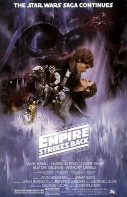

- IV – A New Hope (1977)
- V – The Empire Strikes Back (1980)
- VI – Return of the Jedi (1983)
- I – The Phantom Menace (1999)
- II – Attack of the Clones (2002)
- III – Revenge of the Sith (2005)
The Empire Strikes Back
Star Wars is an American epic space opera media franchise, centered on a film series created by George Lucas. It depicts the adventures of characters "a long time ago in a galaxy far, far away".

The Empire Strikes Back (also known as Star Wars: Episode V – The Empire Strikes Back) is a 1980 American epic space opera film directed by Irvin Kershner.
Leigh Brackett and Lawrence Kasdan wrote the screenplay, with George Lucas writing the film's story and serving as executive producer.
The second installment in the original Star Wars trilogy, it was produced by Gary Kurtz for Lucasfilm and stars Mark Hamill, Harrison Ford, Carrie Fisher, Billy Dee Williams, Anthony Daniels, David Prowse, Kenny Baker, Peter Mayhew, and Frank Oz.